We use equations to express the relationship between two variabes. A graph is a way of visualizing an equation.
Graph of an Equation.
A graph has two axes, horizontal and vertical, and the values for the variables are displayed along the axes.
The first, or input, variable is displayed on the horizontal axis.
The second, or output, variable is displayed on the vertical axis.
The graph itself shows how the two variables are related.
Example1.32.
The graph below shows the relationship between Delberts age, \(D\text{,}\) and Francines age, \(F\text{.}\) Write an equation for Francines age in terms of Delberts age.
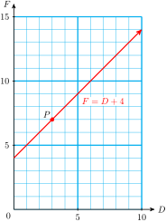
Solution.
In this graph, \(D\) is the input variable and \(F\) is the output variable. We make a table of values by reading points on the graph.
\(~D~\)
\(~0~\)
\(~2~\)
\(~\alert{3}~\)
\(~4~\)
\(~6~\)
\(~9~\)
\(F\)
\(4\)
\(6\)
\(\alert{7}\)
\(8\)
\(10\)
\(13\)
From the table, we see that the value of \(F\) is always 4 more than the value of \(D\text{.}\) Thus, Francine is exactly four years older than Delbert, or \(F=D+4\text{.}\)
QuickCheck1.33.
A is a way of visualizing an algebraic equation.
Answer.
graph
QuickCheck1.34.
The values of the variables are displayed on the .
Answer.
axes
QuickCheck1.35.
The input variable is located on the axis.
Answer.
horizontal
Each point on a graph has two coordinates, which designate the position of the point. For example, the point labeled \(P\) in Example1.32 has horizontal coordinate 3 and vertical coordinate 7.
Ordered pair.
In the Example above, we write the coordinates of point \(P\) inside parentheses as an ordered pair: \((3,7)\text{.}\) The order of the coordinates makes a difference. We always list the horizontal coordinate first, then the vertical coordinate.
QuickCheck1.36.
The position of a point on the graph is given by its .
Answer.
coordinates
QuickCheck1.37.
The notation \((x,y)\) is called .
Answer.
an ordered pair
QuickCheck1.38.
In an ordered pair, we always list the coordinate first.
Answer.
horizontal
Look Closer.
How does the graph illustrate the equation \(F=D+4\text{?}\)
The coordinates of each point on the graph are values for \(D\) and \(F\) that make the equation true.
The coordinates of the point \(P\text{,}\) namely \(D=\alert{3}\) and \(F=\alert{7}\text{,}\) represent the fact that when Delbert was 3 years old, Francine was 7 years old. If we substitute these values into our equation we get
\begin{align*}
F \amp = D+4\\
\alert{7} \amp = \alert{3}+4
\end{align*}
which is true.
Solution of an equation.
An ordered pair that makes an equation true is called a solution of the equation. Each point on the graph represents a solution of the equation.
Exercise1.39.
Locate on the graph each of the ordered pairs listed in the table of Example1.32 above, and make a dot there. Label each point with its coordinates.
By substituting its coordinates into the equation, verify that each point you labeled in part (a) represents a solution of the equation \(F=D+4\text{.}\)
QuickCheck1.40.
An ordered pair whose coordinates make the equation true is called a of the equation.
Answer.
solution
SubsectionGraphing an Equation
The simplest way to draw a graph for an equation is to make a table of values and plot the points.
Example1.41.
Graph the equation \(y=8-x\text{.}\)
Solution.
In this equation, \(x\) is the input variable and \(y\) is the output variable. We choose several values for \(x\) and use the equation to find the corresponding values for \(y\text{.}\)
\(x\)
Calculation
\(y\)
\((x,y)\)
\(0\)
\(y=8-0=8\)
\(8\)
\((0,8)\)
\(2\)
\(y=8-2=6\)
\(6\)
\((2,6)\)
\(5\)
\(y=8-5=3\)
\(3\)
\((5,3)\)
\(8\)
\(y=8-8=0\)
\(0\)
\((8,0)\)
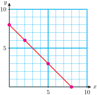
Each ordered pair \((x,y)\) represents a point on the graph of the equation. We plot the points on the grid and connect them with a smooth curve, as shown above.
SubsectionChoosing Scales for the Axes
If the variables in an equation have very large (or very small) values, we must choose scales for the axes that fit these values.
To graph an equation.
Make a table of values.
Choose scales for the axes.
Plot the points and connect them with a smooth curve.
Example1.42.
Graph the equation \(~y=250+x\text{.}\)
Solution.
To graph this equation, we choose multiples of 50 for the \(x\)-values.
\(x\)
Calculation
\(y\)
\((x,y)\)
\(0\)
\(y=250+0=250\)
\(250\)
\((0,250)\)
\(50\)
\(y=250+50=300\)
\(300\)
\((50, 300)\)
\(100\)
\(y=250+100=350\)
\(350\)
\((100, 350)\)
\(200\)
\(y=250+200=450\)
\(450\)
\((200, 450)\)
The largest \(y\)-value in the table is 450, so we scale the axis to a little larger than 450, say, 500. We plot the ordered pairs to obtain the graph shown below.
Look Closer.
How do we know what scales to use on the axes?
For most graphs, it is best to have between ten and twenty tick marks on each axis, or the graph will be hard to read.
We choose intervals of convenient size for the particular problem, such as 5, 10, 25, 100, or 1000.
It is not necessary to use the same scale on both axes.
Caution1.43.
It is important that the scales on the axes be evenly spaced. Each tick mark must represent the same interval. The scales on the graph below are incorrectly labeled.
which gives Francines age, \(F\text{,}\) in terms of Delberts age, \(D\text{.}\) We can use the graph to answer two types of questions about the equation \(F=D+4\text{:}\)
Given a value of \(D\text{,}\) find the corresponding value of \(F\text{.}\)
Given a value of \(F\text{,}\) find the corresponding value of \(D\text{.}\)
Evaluatiing and Solving.
The first of these tasks is another way of evaluating the algebraic expression \(D+4\text{,}\) and the second task is another way of solving an equation.
Example1.44.
Use the graph of the equation \(F=D+4\) to evaluate the expression \(D+4\) for \(D=7\text{.}\) Verify your answer algebraically.
Use the graph of the equation \(F=D+4\) to solve the equation \(13=D+4\text{.}\) Verify your answer algebraically.
Solution.
We locate \(D=7\) on the horizontal axis, as shown at left below. Then we move vertically to point on the graph with \(D\)-coordinate 7. Finally, we move horizontally from point \(A\) to the vertical axis to find the \(F\)-coordinate. The coordinates of point \(A\) are \((7,11)\text{,}\) which tells us that when \(D=7,~F=11\text{.}\) Our answer is 11.
To verify the answer algebraically, we evaluate the expression for \(D=7\text{:}\) we substitute \(\alert{7}\) for \(D\) into the equation:
We locate \(F=\alert{13}\) on the vertical axis. We move horizontally to point \(B\) on the graph shown above right, with \(F\)-coordinate 13. From point \(B\text{,}\) we move vertically to the horizontal axis to find the \(D\)-coordinate. The coordinates of point \(B\) are \((9,13)\text{,}\) which tells us that when \(F=13,~D=9\text{.}\) Our answer is 9.
To verify the answer algebraically, we solve the equation when \(F=13\text{:}\) we subtract 4 from both sides of the equation:
\begin{align*}
13 \amp = D+4 \amp\amp \blert{\text{Subtract 4 from both sides.}}\\
\underline{\blert{-4}} \amp ~~~~~\underline{~~~~\blert{-4}}\\
9 \amp = D
\end{align*}
Example1.45.
Here is a graph of
\begin{equation*}
y=1.5x
\end{equation*}
Use the graph to solve the equation \(1.5x=3.75\text{.}\)
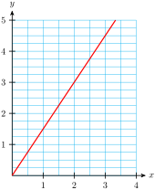
Solution.
By comparing the equation of the graph with the equation we want to solve, we see that \(y\) has been replaced by \(\alert{3.75}\text{.}\)
We locate 3.75 on the \(y\)-axis, then find the point on the graph with \(y\)-coordinate 3.75.
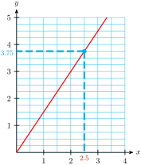
The \(x\)-coordinate of this point is 2.5, so the ordered pair \((2.5, 3.75)\) is a solution of the equation \(y=1.5x\text{,}\) and \(x=2.5\) is the solution of the equation \(1.5x=3.75\text{.}\)
QuickCheck1.46.
The graph of an equation is a picture of its .
Answer.
solutions
QuickCheck1.47.
To solve an equation using a graph, we start on the axis.
Answer.
vertical
Skills Warm-Up1.48.
What value corresponds to each labeled point?
Label the axis by 1000s.
On the axis in part (a), plot 1400 and 8350.
Label the axis below with 16 tick marks (not counting zero), the highest being 800.
On the axis in part (a), plot 132 and 614.
Label an axis in increments of 40,000 from 0 to 600,000.
On your axis, plot 250,000 and 472,600.
Label an axis in increments of 0.5 from 0 to 5.
On the axis in part (a), plot 1.3 and 3.77.
Answer.
\(\displaystyle A: 350;~~B: 825\)
\(\displaystyle 700;~~1400\)
SubsectionLesson
Activity1.8.Making a Graph.
To graph an equation.
Make a table of values.
Choose scales for the axes.
Plot the points and connect them with a smooth curve.
Laura takes her daughter Stefanie berry-picking at a local strawberry farm. Laura can pick three baskets of strawberries in the same time that Stefanie picks one basket.
Let \(L\) stand for the number of baskets Laura has picked and \(S\) for the number of baskets that Stefanie has picked. Write an equation relating the variables.
Graph the equation.
Step 1: Make a table of values. Choose some reasonable values for \(S\text{,}\) such as:
\(S\)
\(1\)
\(2\)
\(4\)
\(7\)
\(10\)
\(L\)
\(\hphantom{0000}\)
\(\hphantom{0000}\)
\(\hphantom{0000}\)
\(\hphantom{0000}\)
\(\hphantom{0000}\)
Use the equation to find the corresponding values of \(L\text{.}\) For example, when \(S=\alert{1}\text{,}\)
Step 2: Label the horizontal axis with the input variable, and the vertical axis with the output variable. Then label the scales on the axes.
Step 3: Plot the points in the table and connect them with a smooth curve. The points on this graph lie on a straight line.
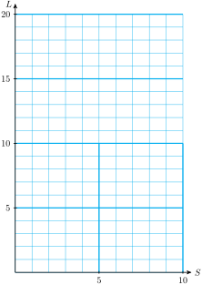
Emily and Megan pledged to walk a total of 12 miles for their schools fundraising walkathon. Let \(E\) stand for the number of miles Emily walks, and \(M\) for the number of miles Megan walks.
Write an equation for \(E\) in terms of \(M\text{.}\)
Make a table of values and graph the equation.
\(M\)
\(\hphantom{0000}\)
\(\hphantom{0000}\)
\(\hphantom{0000}\)
\(\hphantom{0000}\)
\(E\)
\(\hphantom{0000}\)
\(\hphantom{0000}\)
\(\hphantom{0000}\)
\(\hphantom{0000}\)
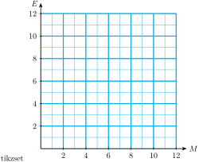
Activity1.9.Choosing Scales for the Axes.
Coreys truck holds 20 gallons of gasoline and gets 18 miles to the gallon.
Write an equation that relates the distance, \(d\text{,}\) that Corey can travel to the number of gallons of gas, \(g\text{,}\) in his truck.
Graph the equation.
Step 1: Make a table of values. Choose values of \(g\) between 0 and 20, because Coreys truck holds 20 gallons of gas. Use the equation to calculate the values of \(d\text{.}\)
\(g\)
\(2\)
\(5\)
\(8\)
\(10\)
\(15\)
\(20\)
\(d\)
\(\hphantom{0000}\)
\(\hphantom{0000}\)
\(\hphantom{0000}\)
\(\hphantom{0000}\)
\(\hphantom{0000}\)
\(\hphantom{0000}\)
Step 2: Choose scales for the axes: Use 10 grid lines on the horizontal axis. The length of each interval is
so we scale the horizontal axis in intervals of 2. On the vertical axis, we use increments of 25 from 0 to 400, which gives us 16 grid lines.
Step 3: Plot the points from the table of values. You will need to estimate the location of some of the points between tick marks.
The Harris Aircraft company gave all its employees a 5% raise.
Write an equation that expresses each employees raise, \(R\text{,}\) in terms of his or her present salary, \(S\text{.}\)
Graph the equation.
Step 1: Complete a table of values.
\(S\)
\(18,000\)
\(24,000\)
\(32,000\)
\(36,000\)
\(R\)
\(\hphantom{0000}\)
\(\hphantom{0000}\)
\(\hphantom{0000}\)
\(\hphantom{0000}\)
Step 2: Choose scales for the axes and label them. (What are the largest values of \(S\) and \(R\) in your table?)
Step 3: Plot the points and draw the graph.
Activity1.10.Using a Graph.
The Reedville City Council voted that 35% of the towns budget should be allotted to education.
Write an equation for the amount budgeted for education, \(s\text{,}\) in terms of the total budget, \(b\text{.}\)
Use your equation to answer the following questions:
If Reedvilles total budget for next year is $1,800,000, how much will be allotted for education?
If Reedville spent $875,000 on education last year, what was its total budget?
Here is a graph of the equation from part (a). Both axes of the graph are scaled in thousands of dollars. Use the graph to estimate the answers to the parts (b) and (c). Show directly on the graph how you obtained your estimates.
Estimates: (b)
\(\hphantom{000000000}\) (c)
SubsubsectionWrap-Up
Objectives.
In this Lesson we practiced the following skills:
Making a table of values
Choosing scales for the axes
Plotting points and drawing a curve
Using a graph to evaluate an expression or solve an equation
Questions.
If you graph the equation \(Q=M+12\text{,}\) which variable goes on the horizontal axis?
If the output values range from 0 to 6000, what would be a good interval to use for the scale on the vertical axis?
In Activity 3b, did we evaluate an expression or solve an equation?
Activity1.11.Homework Preview.
Draw axes and label both scales by 5s, from 0 to 30.
Draw axes and label the horizontal scale by 25s, fom 0 to 200, and the vertical scale by 200s, from 0 to 3000.
What interval does each grid line represent on the horizontal axis? On the vertical axis?
What interval does each grid line represent on the horizontal axis? On the vertical axis?
Find the coordinates of each point.
Answers to Homework Preview
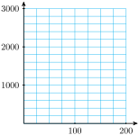
a. horizontal: 5; vertical: 250
a. horizontal: 0.2; vertical: 20
b. \(A(0.2,160),~B(0.6,60),~C(1.4,120)\)
ExercisesHomework 1.3
Exercise Group.
For Problems 12, decide whether the ordered pairs are solutions of the equation whose graph is shown.
1.
\(\displaystyle (6.5,3)\)
\(\displaystyle (0,3.5)\)
\(\displaystyle (8,2)\)
\(\displaystyle (4.5,1)\)
2.
\(\displaystyle (2,6)\)
\(\displaystyle (4,2)\)
\(\displaystyle (10,0)\)
\(\displaystyle (11,7)\)
Exercise Group.
For Problems 36, decide whether the ordered pairs are solutions of the given equation.
3.
\(y=\dfrac{3}{4}x\)
\(\displaystyle (8,6)\)
\(\displaystyle (12,16)\)
\(\displaystyle (2,3)\)
\(\displaystyle (6,\dfrac{9}{2})\)
4.
\(y=\dfrac{x}{2.5}\)
\(\displaystyle (1,2.5)\)
\(\displaystyle (25,10)\)
\(\displaystyle (5,2)\)
\(\displaystyle (8,20)\)
5.
\(w=z-1.8\)
\(\displaystyle (10, 8.8)\)
\(\displaystyle (6,7.8)\)
\(\displaystyle (2,\dfrac{1}{5})\)
\(\displaystyle (9.2,7.4)\)
6.
\(w=120-z\)
\(\displaystyle (0, 120)\)
\(\displaystyle (65,55)\)
\(\displaystyle (150,30)\)
\(\displaystyle (9.6,2.4)\)
Exercise Group.
For Problems 78, state the interval that each grid line represents on the horizontal and vertical axes.
7.
8.
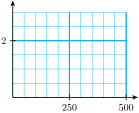
Exercise Group.
For the graphs in Problems 910,
Fill in the table with the correct coordinates. Choose your own points to complete the table.
Look for a pattern in your table, and write an equation for the second variable in terms of the first variable.
9.
\(x\)
\(\hphantom{00}\)
\(2\)
\(5\)
\(\hphantom{00}\)
\(10\)
\(\hphantom{00}\)
\(\hphantom{00}\)
\(y\)
\(16\)
\(\hphantom{00}\)
\(\hphantom{00}\)
\(10\)
\(\hphantom{00}\)
\(\hphantom{00}\)
\(\hphantom{00}\)
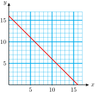
10.
\(x\)
\(0\)
\(1\)
\(\hphantom{00}\)
\(\hphantom{00}\)
\(7\)
\(\hphantom{00}\)
\(\hphantom{00}\)
\(y\)
\(\hphantom{00}\)
\(\hphantom{00}\)
\(16\)
\(20\)
\(\hphantom{00}\)
\(\hphantom{00}\)
\(\hphantom{00}\)
Exercise Group.
For Problems 1114, choose the equation that describes the graph. (A graph might have more than one equation.)
\(\displaystyle y=150-x\)
\(\displaystyle y=15-x\)
\(\displaystyle y=0.2x\)
\(\displaystyle y=\dfrac{x}{60}\)
\(\displaystyle y=\dfrac{x}{5}\)
\(\displaystyle y=15+x\)
\(\displaystyle y=\dfrac{60}{x}\)
\(\displaystyle y=5x\)
11.
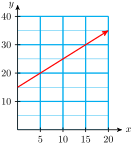
12.
13.
14.
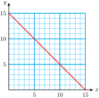
Exercise Group.
Use the three steps in the Lesson to make the graphs in Problems 1517.
15.
The college Bookstore charges a 25% markup over wholesale prices. If the wholesale price of a book is \(w\) dollars, the bookstores price \(p\) is given by
\begin{equation*}
p=1.25w
\end{equation*}
How much does the bookstore charge for a book whose wholesale price is $28?
Evaluate the formula to find the bookstores price for various books.
\(w\)
\(12\)
\(16\)
\(20\)
\(30\)
\(36\)
\(40\)
\(p\)
\(\hphantom{00}\)
\(\hphantom{00}\)
\(\hphantom{00}\)
\(\hphantom{00}\)
\(\hphantom{00}\)
\(\hphantom{00}\)
Plot the values from the table and graph the equation.
16.
Uncle Rays diet allows him to eat a total of 1000 calories for lunch and dinner. Let \(L\) stand for the number of calories in Uncle Rays lunch, and \(D\) for the number of calories in his dinner.
Write an equation for \(D\) in terms of \(L\text{.}\)
Complete the table.
\(L\)
\(250\)
\(300\)
\(450\)
\(600\)
\(D\)
\(\hphantom{00}\)
\(\hphantom{00}\)
\(\hphantom{00}\)
\(\hphantom{00}\)
Label the scales on the axes and graph the equation. Use intervals of 100 on both axes.
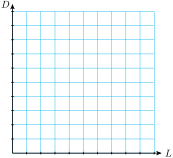
17.
The Green Co-op plans to divide its profit of $3600 from the sale of environmentally safe products among its members. Let \(m\) stand for the number of members, and \(S\) for the share of the profits each member will receive.
Write an equation for \(S\) in terms of \(m\text{.}\)
Complete the table.
\(m\)
\(20\)
\(40\)
\(60\)
\(100\)
\(S\)
\(\hphantom{00}\)
\(\hphantom{00}\)
\(\hphantom{00}\)
\(\hphantom{00}\)
Label the scales on the axes and graph the equation. Use intervals of 20 on the vertical axis.
Exercise Group.
For Problems 1819, solve the equation graphically by drawing on the graph. (You may have to estimate some of your solutions.) Then verify your answer by solving algebraically.
18.
The graph of \(k=p-20\) is shown below. Use the graph to solve the equations:
\(\displaystyle 90=p-20\)
\(\displaystyle p-20=40\)
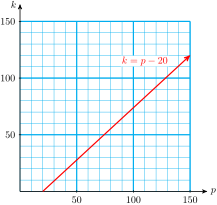
19.
The graph of \(d=18g\) is shown below. Use the graph to solve the equations:
\(\displaystyle 250=18g\)
\(\displaystyle 18g=210\)
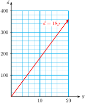
Exercise Group.
For Problems 2021,
Give the coordinates of the indicated point.
Explain what those coordinates tell us about the problem situation.
20.
The graph gives the sales tax, \(T\text{,}\) in terms of the price \(p\) of an item, where the amounts are in dollars.
21.
The graph gives the weight, \(W\text{,}\) in ounces of a chocolate bunny that is \(h\) inches tall.
Exercise Group.
For Problems 2225, use the formulas in Section 1.2.
22.
Suppose your father loans you $2000 to be repaid with 4% annual interest when you finish school. Write an equation for the amount of interest \(I\) you will owe after \(t\) years.
How much interest will you owe if you finish school in 2 years? In 4 years? In 7 years? Make a table showing your answers as ordered pairs.
Use your table to choose appropriate scales for the axes, then plot points and sketch a graph of the equation.
23.
The Earth Alliance made $6000 in revenue from selling tickets to Earth Day, an event for children. Write an equation for its profit \(P\) in terms of its costs.
What was their profit if their costs were $800? $1000? $2500? Make a table showing your answers as ordered pairs.
Use your table to choose appropriate scales for the axes, then plot points and sketch a graph of the equation.
24.
Edgars great-aunt plans to put $5000 in a trust for Edgar until he turns 21, three years from now. She has a choice of several different accounts. Write an equation for the amount of interest the money will earn in 3 years if the account pays interest rate \(r\text{.}\)
How much interest will the $5000 earn in an account that pays 8% interest? 10% interest? 12% interest? Make a table showing your answers as ordered pairs.
Use your table to choose appropriate scales for the axes, then plot points and sketch a graph of the equation.
25.
Delbert keeps track of the total number of points he earns on homework assignments, each of which is worth 30 points. At the end of the semester he has 540 points. Write an equation for Delberts average homework score in terms of the number of assignments, \(n\text{.}\)
What is Delberts average score if there were 20 assignments? 25 assignments? 30 assignments? Make a table showing your answers as ordered pairs.
Use your table to choose appropriate scales for the axes, then plot points and sketch a graph of the equation.